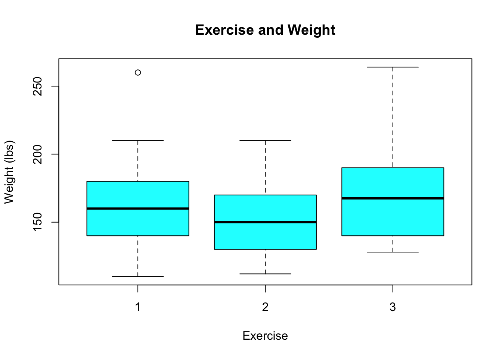

Chapter 12 Regression with Categorical Variables
12.1 Introduction
Thus far in our study of statistical models we have been confined to building models between numeric (continuous) variables. \[y_i=\beta x_i+\alpha+\epsilon_i.\] However, we don’t actually need to restrict our regression models to just numeric explanatory variables. To extend our models to include categorical explanatory we will use a trick called one-hot-encoding of our categorical variables.
12.2 One Hot Encoding
Let’s consider the food_college data set contained in the class R Package.
data("food_college")This data set contains 125 survey responses from college students on their food choices. For now we will focus on two columns the weight column gives us the self reported weight of each student (or at least the 120 students who answered that question) and the Gender column which is categorical with levels (Female and Male).
Suppose we want to look for a difference in the average weight of the students based on the gender variable. We are thus looking for a relationship between a continuous and categorical variable. Therefore, we should make a boxplot to look for this relationship graphically:
boxplot(food_college$weight ~ food_college$Gender, col = "skyblue", main = "Weight of College Students",
xlab = "Gender", ylab = "Weight (lbs)")Based on this boxplot it looks like (as we might expect) the average weight of Males is greater than the average weight of Females. However, as usual we want to consider the possibility that random chance could have generated the effects we see. Let’s see how many samples we have in each of the categories:
table(food_college$Gender)##
## Female Male
## 76 49Looks we have a healthy sample size in each category. As you might have gathered from the title of this chapter we can adapt our regression techniques to study this data set. We want to build a model of the form: \[ y_i=\beta x_i +\alpha\] but we can’t use the names “Female” and “Male” as our x variable directly as \(\beta*Female+\alpha\) doesn’t make sense!
The trick here (called one hot encoding) is to recode our categorical variables with \(N\) levels into \(N-1\) indicator variables \(\delta_i^L\) which give the value 1 if observation \(i\) is in category \(L\) and zero otherwise. Thus we could write our regression as:
\[weight_i=\beta_1 \delta_i^{Female}+ \beta_2 \delta_i^{Male}+\alpha\] However, we will see that we only really need 1 (or generally N-1) indicator variable for our system. After all in our data set if you are NOT male then you must be female. Thus we can simplify our model to:
\[weight_i=\beta \delta_i^{Male}+\alpha\] This model will give the value \(\alpha\) if the subject is female and \(\beta(1)+\alpha=\beta+\alpha\) if the subject is male. Thus, \(\alpha\) will be the mean weight of the \(0\) category (Females here) and \(\beta\) will be the difference in weights between the two categories.
R will perform this encoding of categorical variables for you automatically as long as it knows that the variable being put into the regression should be treated as a factor (categorical variable). You can check whether R is treating a variable as a factor (categorical) using the class command:
class(food_college$Gender)## [1] "factor"Since this variable is already stored as a factor type R will take care of the encoding for us automatically. Let’s go ahead and fit our simple model now:
lm(weight ~ Gender, data = food_college)##
## Call:
## lm(formula = weight ~ Gender, data = food_college)
##
## Coefficients:
## (Intercept) GenderMale
## 145.18 34.01Just as with simple regression we can take a look at the summary of the linear model.
lm.weight = lm(weight ~ Gender, data = food_college)
summary(lm.weight)##
## Call:
## lm(formula = weight ~ Gender, data = food_college)
##
## Residuals:
## Min 1Q Median 3Q Max
## -45.178 -17.428 -4.685 11.822 85.809
##
## Coefficients:
## Estimate Std. Error t value Pr(>|t|)
## (Intercept) 145.178 3.177 45.7 < 2e-16 ***
## GenderMale 34.013 5.076 6.7 7.49e-10 ***
## ---
## Signif. codes: 0 '***' 0.001 '**' 0.01 '*' 0.05 '.' 0.1 ' ' 1
##
## Residual standard error: 27.14 on 118 degrees of freedom
## (5 observations deleted due to missingness)
## Multiple R-squared: 0.2756, Adjusted R-squared: 0.2695
## F-statistic: 44.89 on 1 and 118 DF, p-value: 7.492e-10More importantly, we can compute the confidence intervals for the slope and intercepts. Remember that the intercept gives an estimate for the mean weight of females in our data set and the slope gives the difference in weights between the males and females (on average).
confint(lm.weight, level = 0.99)## 0.5 % 99.5 %
## (Intercept) 136.8603 153.49590
## GenderMale 20.7226 47.30421Based on this conference interval we can see that the slope parameter is somewhere between 20.72 and 47.3 pounds. Therefore, we expect that if we repeated this sample we would still find that Males out weight females (on average) by somewhere between these values. Generally, a slope confidence interval which contains zero means that if we repeated the experiment we might find the reverse trend as presented in our boxplot.
Exercise 12.1 Load the HR_Employee_Attrition data set in R. Perform a regression analysis to compare the DailyRate variable (giving the daily pay of employees at a company) according to the categorical variable (Attrition) which tells whether the employee left the company or not. Be sure to interpret the coefficients in the model you form and use confidence intervals for the parameters to reach a conclusion.
12.2.1 Example: Exercise and Weight
Now lets consider the effect of (self-reported) exercise on weight in college students. Exercise information is stored in the exercise column of the food_college data set. It is a categorical variable with five levels. The students were asked the question: how often do you exercise in a regular week?
+ 1: Everyday
+ 2: Twice or three times per week
+ 3: Once a week
+ 4: Sometimes
+ 5: NeverLet’s take a look at how many observations we have our each level of this variable.
table(food_college$exercise)##
## 1 2 3
## 57 44 11Here is a boxplot of this data:
boxplot(food_college$weight ~ food_college$exercise, main = "Exercise and Weight",
ylab = "Weight (lbs)", xlab = "Exercise", col = "cyan")
Also, the below code discovers that we have sum(is.na(food_college$exercise)) who did not answer this question. They will need to be removed from consideration.
sum(is.na(food_college$exercise))## [1] 13# Create a new data set with missing entries removed
f2 = food_college %>%
select(exercise, weight, Gender, GPA) %>%
na.omit()Notice that only the first three options were reported on in this data set (nobody answer with the 4 or 5 options in the survey). To build our regression model we want something of the form: \[weight_i=\beta_1 \delta_i^{E_2}+\beta_2 \delta_i^{E_1}+\alpha\] The works out daily (exercise==1) describes everyone that doesn’t workout 2-3 times or once a week and is therefore included in the \(\alpha\) term.
To make sure that R treats the exercise variable as a categorical one in our regression model we should check what R thinks this variable is:
class(f2$exercise)## [1] "numeric"Notice R thinks this is a discrete numeric variable (incorrectly). Therefore we should correct this before performing a regression. This can be done with the as.factor function.
f2$exercise = as.factor(f2$exercise)Now we can proceed with the regression analysis in R.
lm.exercise = lm(weight ~ exercise, data = f2)
summary(lm.exercise)##
## Call:
## lm(formula = weight ~ exercise, data = f2)
##
## Residuals:
## Min 1Q Median 3Q Max
## -50.111 -20.111 -4.775 15.494 99.889
##
## Coefficients:
## Estimate Std. Error t value Pr(>|t|)
## (Intercept) 160.111 3.891 41.148 <2e-16 ***
## exercise2 -5.336 5.965 -0.895 0.373
## exercise3 13.589 9.844 1.380 0.170
## ---
## Signif. codes: 0 '***' 0.001 '**' 0.01 '*' 0.05 '.' 0.1 ' ' 1
##
## Residual standard error: 28.59 on 101 degrees of freedom
## Multiple R-squared: 0.03424, Adjusted R-squared: 0.01512
## F-statistic: 1.79 on 2 and 101 DF, p-value: 0.1721confint(lm.exercise)## 2.5 % 97.5 %
## (Intercept) 152.392250 167.829972
## exercise2 -17.168901 6.496678
## exercise3 -5.938456 33.116234This confidence interval shows us that we can’t conclude we have any difference in the average weight of these three categories as the confidence intervals contain both positive and negative values. It also gives us a confidence interval for the average weight of those in category 1 (exercise everyday), as this is the intercept.
Exercise 12.2 Repeat the analysis from this section but change the response variable from weight to GPA. Be sure to interpret the coefficients in your model and use confidence intervals to reach a conclusion.
12.2.2 Housing Prices by Neighborhood
As another example, let’s consider the Ames housing data set again. We will build a regression model for the Sales Price (log10) as iot depends on the Neighborhood.
We can begin by building a boxplot of this.
data("AmesHousing_Regression")
boxplot(AmesHousing_Regression$SalePrice.log10 ~ AmesHousing_Regression$Neighborhood,
main = "Sales Price for Different Neighborhoods", cex = 0.5, las = 2, col = "skyblue",
ylab = "Sales Price log10", xlab = "")Based on this plot we might ask if we have sufficient evidence to conclude that the neighborhood effects the sales price of houses?
We can write this as a multiple linear regression model, like-so:
lm.houseNeig = lm(SalePrice.log10 ~ Neighborhood, data = AmesHousing_Regression)
summary(lm.houseNeig)##
## Call:
## lm(formula = SalePrice.log10 ~ Neighborhood, data = AmesHousing_Regression)
##
## Residuals:
## Min 1Q Median 3Q Max
## -0.96250 -0.05928 0.00040 0.06514 0.60735
##
## Coefficients:
## Estimate Std. Error t value Pr(>|t|)
## (Intercept) 5.289233 0.021716 243.561 < 2e-16 ***
## NeighborhoodBlueste -0.140127 0.042333 -3.310 0.000944 ***
## NeighborhoodBrDale -0.268391 0.030195 -8.889 < 2e-16 ***
## NeighborhoodBrkSide -0.211962 0.024369 -8.698 < 2e-16 ***
## NeighborhoodClearCr 0.016966 0.027780 0.611 0.541420
## NeighborhoodCollgCr 0.001167 0.022827 0.051 0.959216
## NeighborhoodCrawfor 0.007413 0.024491 0.303 0.762160
## NeighborhoodEdwards -0.196533 0.023231 -8.460 < 2e-16 ***
## NeighborhoodGilbert -0.014499 0.023487 -0.617 0.537076
## NeighborhoodGreens -0.005084 0.046067 -0.110 0.912133
## NeighborhoodGrnHill 0.150888 0.084107 1.794 0.072915 .
## NeighborhoodIDOTRR -0.306116 0.024771 -12.358 < 2e-16 ***
## NeighborhoodLandmrk -0.152512 0.116946 -1.304 0.192293
## NeighborhoodMeadowV -0.316567 0.028783 -10.998 < 2e-16 ***
## NeighborhoodMitchel -0.092294 0.024237 -3.808 0.000143 ***
## NeighborhoodNAmes -0.136886 0.022392 -6.113 1.11e-09 ***
## NeighborhoodNoRidge 0.214758 0.025643 8.375 < 2e-16 ***
## NeighborhoodNPkVill -0.141859 0.032337 -4.387 1.19e-05 ***
## NeighborhoodNridgHt 0.199826 0.023476 8.512 < 2e-16 ***
## NeighborhoodNWAmes -0.022528 0.023925 -0.942 0.346467
## NeighborhoodOldTown -0.219893 0.022953 -9.580 < 2e-16 ***
## NeighborhoodSawyer -0.160045 0.023644 -6.769 1.56e-11 ***
## NeighborhoodSawyerW -0.040168 0.024026 -1.672 0.094653 .
## NeighborhoodSomerst 0.059331 0.023327 2.543 0.011028 *
## NeighborhoodStoneBr 0.192290 0.027028 7.114 1.41e-12 ***
## NeighborhoodSWISU -0.170609 0.027326 -6.244 4.90e-10 ***
## NeighborhoodTimber 0.086612 0.025593 3.384 0.000723 ***
## NeighborhoodVeenker 0.091173 0.031965 2.852 0.004372 **
## ---
## Signif. codes: 0 '***' 0.001 '**' 0.01 '*' 0.05 '.' 0.1 ' ' 1
##
## Residual standard error: 0.1149 on 2902 degrees of freedom
## Multiple R-squared: 0.5825, Adjusted R-squared: 0.5786
## F-statistic: 149.9 on 27 and 2902 DF, p-value: < 2.2e-16Let’s take a look at the 95% confidence intervals for the coefficients. Those Neighborhoods whose CI are all negative we have considerable evidence that they tend to be priced lower than the reference neighborhood (Blmngtn). Those will all positive values tend to be priced higher on average.
confint(lm.houseNeig)## 2.5 % 97.5 %
## (Intercept) 5.24665172 5.331813381
## NeighborhoodBlueste -0.22313240 -0.057121761
## NeighborhoodBrDale -0.32759687 -0.209184391
## NeighborhoodBrkSide -0.25974508 -0.164179459
## NeighborhoodClearCr -0.03750355 0.071435614
## NeighborhoodCollgCr -0.04359049 0.045925268
## NeighborhoodCrawfor -0.04060827 0.055433717
## NeighborhoodEdwards -0.24208283 -0.150982549
## NeighborhoodGilbert -0.06055090 0.031553590
## NeighborhoodGreens -0.09541144 0.085243723
## NeighborhoodGrnHill -0.01402651 0.315803179
## NeighborhoodIDOTRR -0.35468560 -0.257546220
## NeighborhoodLandmrk -0.38181677 0.076792799
## NeighborhoodMeadowV -0.37300451 -0.260128948
## NeighborhoodMitchel -0.13981697 -0.044770530
## NeighborhoodNAmes -0.18079211 -0.092980350
## NeighborhoodNoRidge 0.16447758 0.265039266
## NeighborhoodNPkVill -0.20526525 -0.078451816
## NeighborhoodNridgHt 0.15379429 0.245858519
## NeighborhoodNWAmes -0.06943921 0.024383298
## NeighborhoodOldTown -0.26489858 -0.174886501
## NeighborhoodSawyer -0.20640583 -0.113683967
## NeighborhoodSawyerW -0.08727748 0.006940723
## NeighborhoodSomerst 0.01359175 0.105070049
## NeighborhoodStoneBr 0.13929429 0.245286165
## NeighborhoodSWISU -0.22418873 -0.117029325
## NeighborhoodTimber 0.03642996 0.136793940
## NeighborhoodVeenker 0.02849537 0.153849938Later in the course we will learn about statistical hypothesis testing, then we can look at the last line last-line for the F-statistics. This tells us if we have sufficient evidence that the mean sales price differs based on the neighborhood (as that is our only explanatory variable now). The small p-value here tells us to reject this null hypothesis here. Apparently, the real-estate agents are correct the location does matter.
12.2.3 Advanced: Exercise and Gender Together
In our above example we had an obvious confounding variable (gender). We have already shown that the gender of the participants matters quite a bit in determining their weights. Lets see how many males and females we have for each of the three exercise categories.
table(f2$exercise, f2$Gender)##
## Female Male
## 1 28 26
## 2 26 14
## 3 6 4Looking at this table we can see that the dip in the mean weight for exercise group 2 might not be caused by any real effect of exercise but just the fact that this group has a larger percentage of female participants (who tend to weight less).
In studying the effect of exercise frequency on the weight of our participants we should also account for the natural weight differences between genders.
We can account for this by adding the two models we have developed together.
\[W_i=\beta_1 \delta_i^{Male}+\beta_2 \delta_i^{E2}+\beta_3 \delta_i^{E3}+\alpha\] Notice that \(\alpha\) will now be the average weight of a female who exercises daily (exercise category 1). The \(\beta_1\) term will show the effects of gender on weight without accounting for exercise. The exercise coefficients give the shifts in the mean weights caused by exercise at that frequency (relative to the weight of a female who exercises daily).
Before you run more complicated models like this one it is generally a good idea to think about what you expect to see in the results. Here I am assuming that exercise more frequently will reduce weight. For this model I would expect to see that \(\beta_1\approx 30\) because that is the difference in the mean weights between the genders. If exercising more frequently has a strong effect on weights we would expect that \(\beta_2, \beta_3\) are positive. Moreover, if the frequency matters quite a bit then \(\beta_3>\beta_2\).
Now that we have designed our model we are ready to create it. This is pretty fast and easy in R.
lm.control = lm(weight ~ Gender + exercise, data = f2)
summary(lm.control)##
## Call:
## lm(formula = weight ~ Gender + exercise, data = f2)
##
## Residuals:
## Min 1Q Median 3Q Max
## -40.729 -18.015 -3.003 10.677 84.271
##
## Coefficients:
## Estimate Std. Error t value Pr(>|t|)
## (Intercept) 145.609 4.081 35.680 < 2e-16 ***
## GenderMale 30.121 4.897 6.151 1.6e-08 ***
## exercise2 -1.376 5.147 -0.267 0.7898
## exercise3 16.043 8.436 1.902 0.0601 .
## ---
## Signif. codes: 0 '***' 0.001 '**' 0.01 '*' 0.05 '.' 0.1 ' ' 1
##
## Residual standard error: 24.48 on 100 degrees of freedom
## Multiple R-squared: 0.2993, Adjusted R-squared: 0.2783
## F-statistic: 14.24 on 3 and 100 DF, p-value: 8.494e-08From this we can see the best fit parameters follow our expectations in that \(\beta_3>0\) and \(\beta_3>\beta_2\). However, we still see that \(\beta_2<0\). Moreover, we really shouldn’t look to closely at these best fit values as they are certain to change if we recollect our data.
Looking at the confidence intervals we can see that we can’t conclude much about exercise frequency based on this data set.
confint(lm.control)## 2.5 % 97.5 %
## (Intercept) 137.5119571 153.705093
## GenderMale 20.4048749 39.836637
## exercise2 -11.5864570 8.834878
## exercise3 -0.6935641 32.779910Both of our confidence intervals for exercise contain zero. This means that we don’t have enough data to see a consistent effect OR perhaps no consistent effect exists. Also, notice these confidence intervals are pretty wide, especially for the exercise3=\(\beta_3\) parameter. This is because we only have a very small sample in this category (6 females and 4 males).
Notice, as we include more factors in our models we will steadily reduce the samples we have in each category. This will in turn lead to larger standard errors and confidence intervals for the parameters. It might seem like a good idea to include many components in our models but you need to exercise some prudence in doing so. Including too many components will whittle our data set into small chunks which won’t be large enough for us to distinguish much from the data.
Exercise 12.3 Repeat the analysis from this section but change the response variable from weight to GPA. Be sure to interpret the coefficients in your model and use confidence intervals to reach a conclusion.
12.3 Diagnostics
When we use form regression models where the explanatory variables are categorical the same core assumptions (Linearity, Independence of Errors, Equal Variance of Errors and Normality of Errors) are being used to form the model. \[ y_j = \sum_{i=1}^{L-1} \beta_i \delta_{ij} + \alpha+\epsilon_j \] We can still evaluate these by looking at histograms, qqplots of the residuals (Normality of the Residuals) and the residuals plotted as a function of the explanatory variable (Residual plot). In the residual plot (which should now be a box plot instead of a scatter plot) we should see no obvious trends as well as roughly equal variance (spreads) as a function of the explanatory variable.
The required plots should still be formed by using the diagRegressionPlots command in my R package. Test this out for yourself and see how you might expect violations of the conditions to manifest in the diagnostic plots.
However, note the bottom right plot is no longer useful for categorical explanatory variables. Below I show the diagnostic plots for the exercise versus weight regression we performed above.
diagRegressionPlots(lm.exercise)12.4 Homework
12.4.1 Concept Questions
Describe the process that R uses to generate a “One Hot Encoding” of a categorical variable with \(L\) levels for regression.
If I form a regression model using a single categorical explanatory variable with 4 levels, how many slopes will need to estimated from the data?
The same core assumptions apply to regression using categorical variables as to ordinary regression (True/False)
12.4.2 Practice Problems
Suppose that I have collected survey data the education level of people in the local area and their annual income. Suppose that my educational background variable has the following four levels (Non high school graduate, high school graduate, college graduate, advanced degree) cooresponding to the highest level achieved by a respondant. I want to look for a difference in incomes based on this categorical variable.
- If I form a regression model using this data, how many parameters (slopes+intercepts) will I be estimating?
- Write out a formula for the model, and give an interpretation of all the variables and parameters.
Explain the reasoning behind one-hot encoding categorical variables. Why do we need to do this? What is subjective about the process?
12.4.3 Advanced Problems
For each of the below questions conduct a full regression analysis. Remember to check whether R is treating a categorical variable as a “factor”. If not then cast it to a factor using the as.factor command.
Load the kidiq data set in R. Famalirise yourself with this data set. We will be using various explanatory variables in this exercise to try and predict the response variable
kid_score. For each of the below form a graphical plot to look for a relationship, check sample sizes, form a regresion model and interpret the results.- Use mom_hs as the explanatory variable.
- Use mom_work as the explanatory variable.
- Use both mom_hs and mom_work as explanatory variables.
Load the videoGameSales data set in R. We want to look for a relationship between the
genrecolumn and theGlobal_Salescolumn.- Choose the appropriate graphical way to look for a relationship between these two columns. What does you EDA indicate?
- Check the sample size for each of the categories of the Genre column. Are any categories poorly represented in the data set and need to be combined or removed?
- Build a regression model of your system. Write down the model form and what each of the slopes and the intercepts mean. What can you conclude based on your model?
Load the
NBA_Draft_Datadata set in R. We will be looking for useful explanatory variables for the response variablePTS. For each of the following explanatory variables, make the appropriate plot in R, check sample sizes, form the regression model and interpret the model results.- Use the
Poscolumn as an explanatory variable. - Use the
Tmcolumn as an explanatory variable. - Use nboth
PosandTmas an explanatory variable.
- Use the